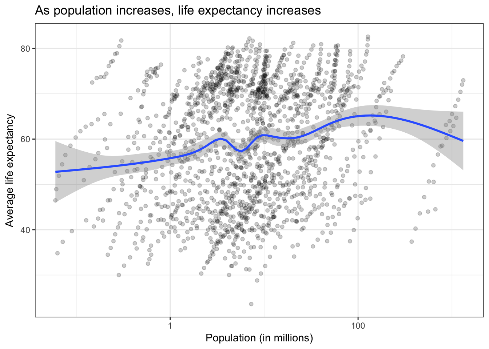

This content is from the fall 2016 version of this course. Please go here for the most recent version.
Due before class Wednesday November 9th.
We learned three ways of collecting data from the internet:
For the homework, you will
hw06 repositoryGo here to fork the repo for homework 06.
gapminder data (even more)We’ve examined the gapminder data quite a bit. One relationship we’ve looked at (or are about to) is the relationship between population and life expectancy.
library(tidyverse)
library(gapminder)
gapminder %>%
# convert to population in millions
mutate(pop = pop / 1000000) %>%
ggplot(aes(pop, lifeExp)) +
geom_point(alpha = .2) +
geom_smooth() +
scale_x_log10() +
labs(title = "As population increases, life expectancy increases",
x = "Population (in millions)",
y = "Average life expectancy")
For the assignment, I want you to replace population with population density and evaluate its relationship with average life expectancy. To do this:
gapminder and the country information from geonames
left_join from dplyr to merge the tablesgapminder writes the name of countries differently from geonames. To complete the merge, you need a unique key to match observations between the data framescountrycode that helps solve this problem. countrycode() takes as an input a country’s name in a specific format and outputs it using whatever format you specify.
gapminder stores them using the country.name formatgeonames stores them under the countryCode column using the iso2c formatIf you want to use Python for this, the process is similar but you will need to determine the equivalent functions for merging. I could not find an existing API package for geonames in Python, though there is a package that contains a local copy of parts of the geonames database.1
For the second part of the assignment, I want you to create a new dataset. Note that I am not asking you to analyze it, simply collect it. Don’t make it harder than it needs to be.
Unlike the first part, you cannot use a pre-written package in R or Python to obtain your data. If you go the API route, you need to write your own code or function to query the server and obtain the results. If you decide to skip the API entirely, you will need to use rvest or BeautifulSoup to scrape the content of a web page and extract the relevant information.
The end result must be a tidy data frame stored in the repository ready to be analyzed. I should be able to run your code and reproduce your data.2 3
Your assignment should be submitted as a set of R scripts, R Markdown documents, Jupyter Notebooks, data files, etc. Whatever is necessary to show your code and present your results. Follow instructions on homework workflow. As part of the pull request, you’re encouraged to reflect on what was hard/easy, problems you solved, helpful tutorials you read, etc.
Check minus: Cannot get code to run. Fail to accurately create the population density variable. Generated data set is not tidy. No documentation explaining how to use your API function or web scraping script.
Check: Solid effort. Hits all the elements. No clear mistakes. Easy to follow (both the code and the output). Nothing spectacular, either bad or good.
Check plus: Estimate a statistical model for the gapminder question, or do something beyond producing a graph. Write an API function that uses authentication. Use Python for some portion/all of the assignment.
I’m not sure this includes the areaInSqKm variable - test at your own risk.↩
Obviously if you are scraping from a web page that frequently updates its content, I may not perfectly reproduce your results. That’s fine - just make sure you’ve saved a copy of the data frame in the repo.↩
Also if you write your own API function for a site that requires authentication, make sure to include instructions about where to store my API key so I can run your code without sharing your private key.↩
This work is licensed under the CC BY-NC 4.0 Creative Commons License.